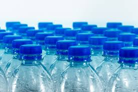

DEFINICION
El tereftalato de polietileno, comúnmente conocido como PET, es un tipo de plástico perteneciente a la familia de los poliésteres. Se utiliza ampliamente en diversas aplicaciones debido a sus propiedades físicas y químicas favorables El PET es uno de los materiales más usados y reciclados del mundo. Su resistencia al impacto y a las temperaturas, así como su barrera contra la humedad son los factores por los que se ha convertido en el preferido para el embalaje de productos
